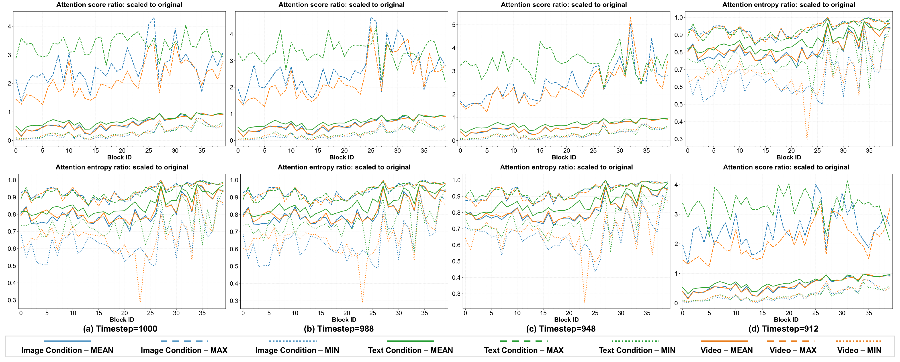

Method
AlignVid recalibrates attention inside the model — no fine-tuning, no extra parameters, negligible inference overhead. It has two complementary components:
Attention Scaling Modulation
Rescales query/key representations by a single coefficient γ (default 1.35) to sharpen the attention energy landscape — lowering entropy and amplifying text tokens over visual priors.
Guidance Scheduling
Applies ASM selectively across foreground-sensitive transformer blocks and early denoising steps, stabilizing generation and limiting visual-quality degradation.
Unlike input-level perturbations such as blurring — which visibly corrupt the reference image — AlignVid performs this reallocation entirely within the model, giving a tunable semantic–quality trade-off without input-level corruption. The default coefficient γ = 1.35 transfers across backbones without per-model search (analogous to choosing CFG strength).
Pilot study: blurring the input "purifies" attention

Videos and attention maps generated from the original input image (top) and from the same image after Gaussian blur (bottom). In the original setting the model exhibits visual dominance — excessive focus on the reference image suppresses text constraints and temporal dynamics. Blurring weakens this dominance, shifting attention toward text tokens and temporal neighbors, increasing attention scores, and lowering entropy across all modalities. AlignVid mimics this sharpening effect internally, with no input corruption.
Attention analysis

ASM sharpens attention (lower entropy), boosts focus on text tokens, and suppresses the dominant image regions — exactly the effect blurring achieves at the input, but realized inside the model.